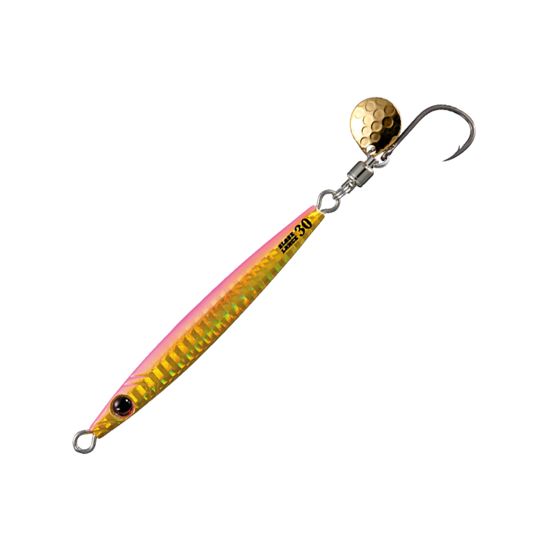
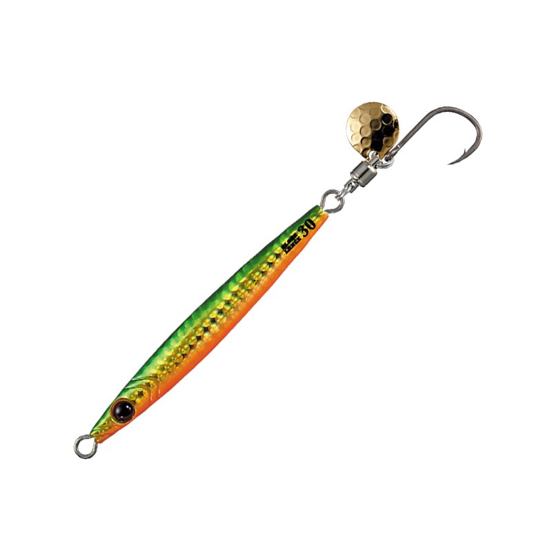
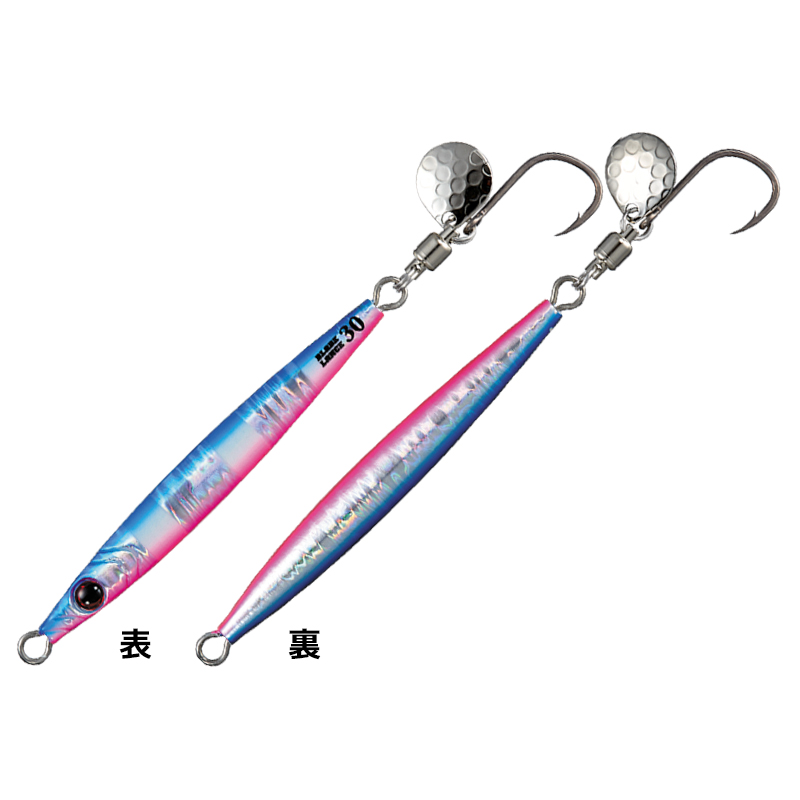
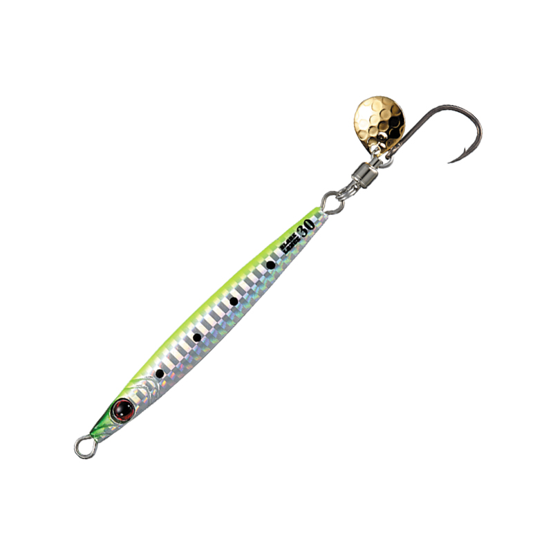

ブレードランス
（BLADE LANCE）
ブレードランスはSHOUT!（シャウト）のテイルブレードジグです。
サワラをメインターゲットにした、ブレードジギング専用のテイルブレードジグ。細身のロングボディが、サヨリやコウナゴのような細長いベイトにマッチします。テールのハンマードコロラドブレードがキラメキと振動を出し、サワラや青物に強くアピールします。

画像出典:SHOUT!公式HP
スペック
- メーカー
- SHOUT!（シャウト）
- タイプ
- テイルブレードジグ（ブレードジギング専用）
- 品番
- 141BL〜146BL
- 重さ
- 30g・40g・50g・60g・80g・100g
- ブレード
- ハンマードコロラドブレード
- フック
- TCコートのブレードジギング専用フック
- ターゲット
- サワラ・青物
- 価格
- 1,200円（30g）〜1,650円（100g）（希望小売価格）
▼今すぐチェック

ブレードランスの特徴
細長いベイトに合わせる、ロングシルエットのテイルブレードジグ
-
ロングシルエットのベイトにマッチする細身ボディ
細身のロングボディで、サヨリやコウナゴ、小さめのタチウオなど、細長いベイトを食っているサワラに違和感なく見せられます。
-
ハンマードコロラドブレードのキラメキと振動
テールには表面を叩き加工したハンマードコロラドブレードを採用。細かな乱反射のキラメキと、コロラドブレードらしい強い振動で、サワラへのアピール力は抜群です。
-
超貫通性能のTCコートフック
フックには超貫通性能のTCコートを施した、ブレードジギング専用フックを搭載。硬いサワラの口にもしっかり刺さり、バイトを確実にフッキングに持ち込めます。
ブレードランスの使い方
キャストしてボトムを取り、高速でただ巻きするのが基本。ブレードジギングでは速いスピードで巻き続けることが大切なので、途中でスピードを落とさないようにしましょう。
同じシャウトのブレードショーテルで反応がないときに、シルエットを変える目的でローテーションするのも効果的です。
ブレードランスの得意な状況
ボートからのサワラキャスティング（ブレードジギング）や青物狙い。サヨリ・コウナゴ・小さめのタチウオなど、細長いベイトを食っているときに強いテイルブレードジグです。ベイトが細長いのに短いジグへの反応が悪い日は、ブレードランスに替えるだけで口を使うこともあります。
ワンポイント
同じシャウトのブレードショーテルは、短く肉厚なボディのテイルブレードジグ。ベイトが短く丸いときはショーテル、細長いときはランス、とベイトのシルエットに合わせて使い分けるのが基本です。
重さの使い分け
| 重さ | 価格 | 使いどころ |
|---|---|---|
| 30g | 1,200円 | 水深の浅い場所や、潮が緩いときに |
| 40g | 1,250円 | 浅めのエリアのサワラキャスティングに |
| 50g | 1,350円 | サワラキャスティングの基準 |
| 60g | 1,400円 | 水深がある場所や、少し潮が速いときに |
| 80g | 1,500円 | 潮が速い場所や、深いレンジを狙うときに |
| 100g | 1,650円 | 深場や激流で、確実にボトムを取りたいときに |
価格はメーカーの希望小売価格です。
人気カラー
全10色のラインナップから4色を紹介します（カラー名は公式の表記のまま）。

#71 ピンクゴールドピンクとゴールドのアピール系。朝夕のマヅメ時や、濁りのある日に。

#87 グリーンオレンジグリーンとオレンジのゴールド系。濁り潮や曇りの日に。

#133 ブルピンゼブラグローブルピンにグローのゼブラ。晴れた日から夜明け前まで幅広く使えるカラー。

#135 チャートイワシチャートを効かせたイワシカラー。視認性が高く、濁りのある日に。
画像出典:SHOUT!公式HP
ブレードランスに似ているルアー
-
 ブレードショーテル
シャウト
詳細はこちら＞
ブレードショーテル
シャウト
詳細はこちら＞
同じシャウトの短く肉厚なテイルブレードジグ。ベイトが短く丸いときに持ち替えたい1本。
-
 コロジグブレードスリム
ウロコ
詳細はこちら＞
コロジグブレードスリム
ウロコ
詳細はこちら＞
40〜120gの細身ブレードジグ。同じスリム系で、もっと重いウエイトが欲しいときに。
-
 メタルマジックスリム
アクアウェーブ
詳細はこちら＞
メタルマジックスリム
アクアウェーブ
詳細はこちら＞
30〜60gの細身スピンテールジグ。同じくロングシルエットで、ショアから使いたいときに。